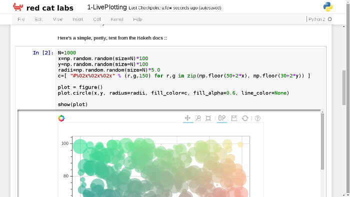
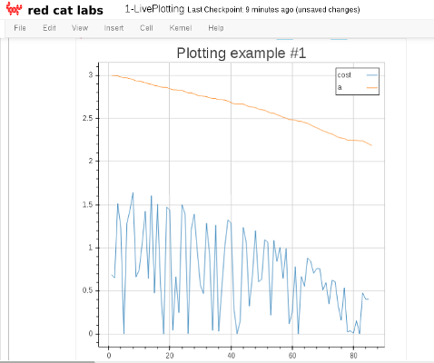
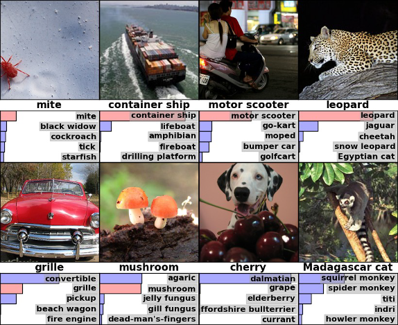

Going Deeper
with Python & Theano
19 June 2015
Machine Deep Learning
About Me
- Finance / Startups / Machine Learning
-
- Moved to Singapore in Sep-2013
- The past year (2014) = 'fun' :
-
- Machine Learning : Deep Learning, NLP
- Languages : Python, Go, Scala, NodeJS, Haskell, Python
- "MeetUp Pro"
- This year (2015) = 'serious' NLP
Talk Outline
- What people are doing
- Why Python / Theano / ++ ?
- Demos & Code
In a random order...
Deep Learning
- Neural Networks
- Multiple layers
- Fed with lots of Data
History
- 1980+ : Lots of enthusiasm for NNs
- 1995+ : Disillusionment = A.I. Winter (v2+)
- 2005+ : Stepwise improvement : Depth
- 2010+ : GPU revolution : Data
Who is involved
- Google - Hinton (Toronto)
- Facebook - LeCun (NYC)
- Baidu - Ng (Stanford)
- ... Apple (acquisitions), etc
- Universities, eg: Montreal (Bengio)
Basic Approach
- Same as original Neural Networks in 1980s/1990s
- Simple mathematical units ...
- ... combine to compute a complex function
- Focus on Supervised Learning here
Single "Neuron"

Change weights to change output function
Multi-Layer
Layers of neurons combine and
can form more complex functions

Supervised Learning
- while not done :
-
- Pick a training case (
x→target_y) - Evaluate
output_yfrom thex - Modify the weights so that
output_yis closer totarget_yfor thatx
- Pick a training case (
Gradient Descent
Follow the gradient of the error
w.r.t the connection weights

"Hello World" → MNIST
- Nice dataset from the late 1980s
- Training set of 50,000 28x28 images
- Now end-of-life as a useful benchmark

Simple Network

... around 2-3% error rate on the test set
New Problems
- ImageNet Competition
- over 15 million labeled high-resolution images...
- ... in over 22,000 categories

Need for Speed

... need for GPU programmers
Python
- Great for high-level glue-code
- Increasingly used in research:
-
- iPython
- + bokeh (visualisation)
- Theano
- + blocks + fuel
- Huge, supportive community
Theano
- Optimised Numerical Computation in Python
- Computation is described in Python code :
-
- Theano operates on expression tree itself
- Optimizes the tree for operations it knows
- Makes use of
numpyandBLAS - Also writes
C/C++orCUDA(orOpenCL)
Graphing Demo
# From : https://github.com/mdda
# Repo : pycon.sg-2015_deep-learning
# Open : ipynb / 1-LivePlotting.ipynb
Bokeh : Hello World
First section of notebook
Theano : Gradient Descent
Using the blocks set-up
plotter = Plot('Plotting example', channels=[['cost','a']], after_batch=True)
main_loop = MainLoop(
model=None, data_stream=data_stream,
algorithm=GradientDescent(cost=cost,
params=[a],
step_rule=Scale(learning_rate=0.01)),
extensions=[
FinishAfter(after_n_epochs=1),
TrainingDataMonitoring([cost, a], after_batch=True),
plotter,
])
main_loop.run()
Live Updating
Screen-grab during training ...
(PR submitted to blocks-extras)
More Complex Networks

GoogLeNet (2014)
ImageNet Results
(now human competitive on ImageNet)
'blocks' for Theano
- Overlay on top of Theano
- Developed by Montreal research group :
-
- Recently (2015-06) launched
- Being actively developed
- Documentation actually exists
- Happy to accept Pull Requests
- Active on Google Groups
'blocks' Teaser
- DSL to describe deep networks :
-
- Initialization :
Constant,Gaussian,Orthonormal, ... - Sigmoids :
Tanh,ReLU, ... - Gradient Descent :
Momentum,ADAgrad, ... - Cost Functions :
CategoricalCrossEntropy, ... - Misc :
BeamSearch, ...
- Initialization :
- Also 'fuel' for Dataset wrangling
What's Next?

Image Labelling

LSTM Units

Image Labels

Recurrent Neural Network Demo
# From : https://github.com/mdda
# Repo : pycon.sg-2015_deep-learning
# Open : ipynb / 6-RNN-as-Author.ipynb
Blocks : Simple Recurrent
transition = GatedRecurrent(name="transition", dim=hidden_state_dim, activation=Tanh())
generator = SequenceGenerator(
Readout(readout_dim=num_states, source_names=["states"],
emitter=SoftmaxEmitter(name="emitter"),
feedback_brick=LookupFeedback(
num_states, feedback_dim, name='feedback'),
name="readout"),
transition,
weights_init=IsotropicGaussian(0.01), biases_init=Constant(0),
name="generator"
)
Training / Testing
- Code includes two
ComputationGraphs -
- Training : Uses character-wise data from files
- Testing : Greedily produces 1000 characters
- Easy to see results in 10-20mins of training
Poetry : Epoch 1
JDa&g#sdWI&MKW^gE)I}<UNK>f;6g)^5*|dXdBw6m\2&XcXVy\ph8G<gAM&>e4+mv5}OX8G*Yw9&n3XW{h@&T\Fk%BPMMI
OV&*C_] ._f$v4I~$@Z^&[2
mOVe`4W)"L-KClkO]wu]\$LCNadyo$h;>$jV7X$XK#4,T(y"sa6W0LWf\'_{\#XD]p%ck[;O`!Px\#E>/Or(.YZ|a]2}q|@a9.g3nV,U^qM $+:nlk0sd;V-Z&;7Y@Z "l-7P^C
"xBF~~{n} n\ Pcbc9f?=y)FIc1h5kvjIi
C<UNK>s DWJr_$ZQtu"BTYm'|SMj-]Z<Vqj*.lh%IYW|q.GK:eNI"r>833?+RuUsOj_)a{\T}gH.zZR^(daC3mg5P0iFi]bqGo4?T|\>0_H&g889voTh=~)^DDRYND46z1J]x;<U>>%eNIRckL)N8n<UNK>n3i)+Ln8
?)9.#s7X]}$*sxZ"3tf ")
@'HW.;I5)C.*%}<jcNLN+Z__RWoryOb#
/`r
Poetry : Epoch 100
Som the riscele his nreing the timest stordor hep pIs dach suedests her, so for farmauteds?
By arnouy ig wore
Thou hoasul dove he five grom ays he bare as bleen,
The seend,
And, an neeer,
Whis with the rauk with, for be collenss ore his son froven faredure:
Then andy bround'd the CowE nom shmlls everom thoy men ellone per in the lave ofpen the way ghiind, thour eyes in is ple gull heart sind, I I wild,
Frreasuce anspeve, wrom fant beiver, not the afan
And in thou' histwish a it wheme-tis lating ble the liveculd;
Noorroint he fhallought, othelts.
Poetry : Epoch 1000
AWhis grook my glass' to his sweet,
Bub my fears liken?
And of live every in seedher;
A Lood stall,
But tare tought than thencer sud earth,
Use'st bee sechion,
For all exprit' are a daud in heaven doth her infook perust the fork the tent.
For maud,
The pittent gover
This and rimp,
Who new
Thoir oldes and did hards, cound.
Plays : Epoch 338
Larger network...
DEDENIUS Why shoulmeying to to wife,
And thou say: and wall you teading for
that struke you down as sweet one.
With be more bornow, bly unjout on the account:
I duked you did four conlian unfortuned drausing-
to sicgia stranss, or not sleepplins his arms
Gentlemen? as write lord; gave sold.
AENEMUUNS Met that will knop unhian, where ever have
of the keep his jangst?icks he I love hide,
Jach heard which offen, sir!'
[Exit PATIIUS, MARGARUS arr [Enter CLOTHUR]
Theano : detail

... zoom out

... zoom out

Theano : "Simple RNN"

Wrap-up
- Theano makes GPUs Python-friendly
- Code on GitHub : "mdda"
-
- iPython Notebooks
- Installation hints & "Misc"
- * Please Star *
- QUESTIONS -
Martin.Andrews @
RedCatLabs.com
HIRING = True